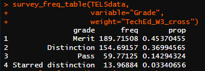
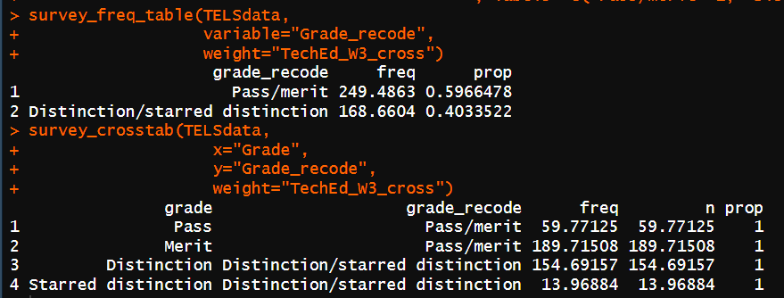
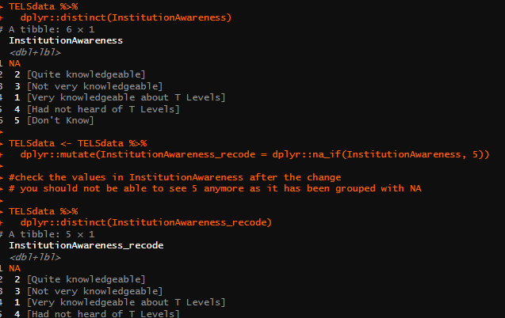
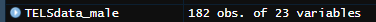

# load packages and custom functions --------------------------------------
source("00_packages_and_functions.R")
# read in data for this script --------------------------------------------
TELSdata <- haven::read_spss("data/TELS_DUMMY_DATA.sav"
#ensures that user-defined missing values in the spss file
# are read into R as NA
# If you want to bring in these codes into analysis (e.g. you might be interested
# in the share who refused) change to TRUE.
, user_na=FALSE)3 Formatting and filtering
You can use 03_formatting_filtering.R as a reference for this section.
This section will cover different ways of formatting, re-coding and filtering survey data.
3.1 Load packages, functions and read in data
You need to make sure you load the required packages and custom functions if you haven’t already. You also need to read in the required data for this script.
Even if you read in the data before, we recommend you re-run this code so that you’re working with a data set without any alterations you may have done to it in previous scripts.
Run the code
Run the code below in the corresponding script in your project.
3.2 Re-coding
Before re-coding, it’s useful to run a frequency of the variable to see how results look and what the value code / labels are. We will be creating those frequency tables using survey_freq_table().
Note
We will be using the function survey_freq_table() and survey_crosstab() to create frequency tables and crosstabs in this section to check our work. We will expand on these later on but for now, we will use them to create tables as shown in the code examples.
In this example, I want to re-code the Grade variable so that I have a ‘pass’ and ‘fail’. To do this we will need to:
check what the data looks like before re-coding
re-code 1-4 (pass) into 1, and 5 (fail) into 0.
add value labels
re-check the data
All of these steps are broken down in different code snippets below.
First, we will check the values in the data before re-coding as shown below.
Run the code
Run the code below in the corresponding script in your project. If you are starting from this point in the guide, remember to run lines from the top of the script to read in the data and reload the packages and custom functions.
# run a frequency of the variable to see how results look and what
# the value code / labels are.
survey_freq_table(TELSdata,
variable="Grade",
weight="TechEd_W3_cross")You should see in the console a frequency table with all the categories for grade as shown in the image below.

Then we re-code by using dplyr::case_when() and dplyr::mutate(). An example of how to do this for Grade is shown below.
#example of recoding using case_when
TELSdata <- TELSdata %>%
mutate(Grade_recode=case_when(
# if 1 or 2 are in Grade, code as 1 in Grade_recode
Grade %in% c(1,2) ~ 1,
# if 3 or 4 are in Grade, code as 2 in Grade_recode
Grade %in% c(3,4) ~ 2))
# Adds value labels
TELSdata <- TELSdata %>%
dplyr::mutate(Grade_recode= haven::labelled(Grade_recode
#label based on code
, labels= c("Pass/merit"=1,
"Distinction/starred distinction"=2)))
# Check if the recode and labelling looks about right.
survey_freq_table(TELSdata,
variable="Grade_recode",
weight="TechEd_W3_cross")
# Cross tab with original variable to confirm.
survey_crosstab(TELSdata,
x="Grade",
y="Grade_recode",
weight="TechEd_W3_cross")You should see a frequency table and a crosstab in the console as shown in the image below. The crosstab will show the old categories and the new ones for cross checking.

3.3 Deriving variables
You can also use the methods mentioned above to create a derived variable using multiple input variables. To do this, you should:
check the values you want to re-code
create your derived variable based on those values.
In this example, we will create a derived variable called Ful_recomm based on CurrentSit and Recommend. We will do this by combining those who are fulfilled with their current situation and would recommend their course.
Note
The 'TRUE' command is like 'ELSE' in SPSS. It’s a catch all code for all values that don’t meet a specified condition. NAs are not included by default.
Run the code
Run the code below in the corresponding script in your project. If you are starting from this point in the guide, remember to run lines from the top of the script to read in the data and reload the packages and custom functions.
#check the values in currentsit
unique(TELSdata$CurrentSit)
#check the values in recommend
unique(TELSdata$Recommend)
#create derived variable
TELSdata <- TELSdata %>%
dplyr::mutate(Ful_recomm=case_when(
CurrentSit %in% c(1,2) & Recommend %in% c(1,2) ~ 1,
CurrentSit %in% c(1,2) & Recommend %in% c(4,5) ~ 2,
CurrentSit %in% c(4,5) & Recommend %in% c(1,2) ~ 3,
TRUE ~ 4))
#label the derived variable column
TELSdata <- TELSdata %>%
dplyr::mutate(Ful_recomm= haven::labelled(Ful_recomm,
labels=c("Fulfilled and recommend" = 1,
"Fulfilled but don't recommend" = 2,
"Not Fulfilled and don't recommend" = 3,
"Other" = 4
) ))
# Check the recode.
survey_freq_table(TELSdata,
variable="Ful_recomm",
weight="TechEd_W3_cross")3.4 Missing values
Sometimes you may want to code some values as missing to run analysis like correlations or regressions. For example, if you want to correlate two questions with a Likert scale, you would want to code any don’t knows or refusals as missing (if not already defined).
In this example, we will change the 5 in the InstitutionAwareness column to NA as its label is “Don’t Know”. We will do this by:
checking the labels in the column of interest
modifying the label in that column using
dplyr::na_if()
Run the code
Run the code below in the corresponding script in your project. If you are starting from this point in the guide, remember to run lines from the top of the script to read in the data and reload the packages and custom functions.
#check the values in InstitutionAwareness
TELSdata %>%
dplyr::distinct(InstitutionAwareness)
#combine mutate and na_if to re-code 5 to NA
TELSdata <- TELSdata %>%
dplyr::mutate(InstitutionAwareness_recode = dplyr::na_if(InstitutionAwareness, 5))
#check the values in InstitutionAwareness after the change
# you should not be able to see 5 anymore as it has been grouped with NA
TELSdata %>%
dplyr::distinct(InstitutionAwareness_recode)You should see a list of codes in the InstitutionAwareness column in the console output and then after you run dplyr::na_if(), you should see that the 5 is no longer there in InstitutionAwareness_recode. An example of this is shown in the image below.

3.5 Filtering
Filtering works differently in R. You need to create a new data frame based on a filter condition. When you run it, you will see it in your R Studio Environment.
This means you can refer to different versions of the same data set depending on the group you’re interested in. We will create a filtered data set for males below, but first we will check the count for FF_Sex in the data.
Tip
Ensure that you name each data frame clearly and sensibly. Your R environment can quickly become messy and hard to follow what is what.
Run the code
Run the code below in the corresponding script in your project. If you are starting from this point in the guide, remember to run lines from the top of the script to read in the data and reload the packages and custom functions.
#check values for sex
TELSdata %>%
dplyr::count(FF_Sex)
# create a new dataset of males - you should see that the count is the same as the
# the total for males in the output above
TELSdata_male <- TELSdata %>%
filter(FF_Sex==2)
# This runs a frequency table on the new filtered dataset we just created.
survey_freq_table(TELSdata_male,
variable="WrkStud",
weight="TechEd_W3_cross")You should see the count in the console, after you run this code. You should also see that the number of obs for TELSdata_male in the environment matches the count for males in the original data set. An image of what you should see in the environment is shown below.
